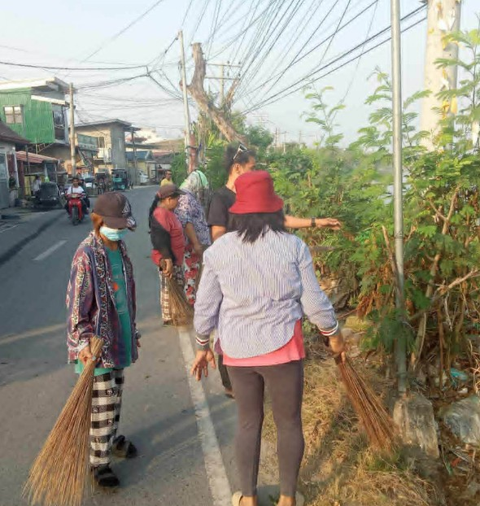

ARMANDO YUMUL
Ako ay pitumpu’t tatlong taong gulang, at mula pa noong kabataan ko ay nasanay na ako sa presensya ng baha. Bukod sa pagtatrabaho sa barangay, nagmamaneho rin ako ng tricycle. Kapag tumataas ang tubig, inaangat ko ang tricycle upang hindi maabala ang mga pasahero. Tulad ng ibang sitio, madalas ding bahain ang Sitio Control. Mabuti na lamang at nasa mataas na bahagi ang aking bahay kaya’t hindi ito nalulubog, ngunit ilang metro lamang ang layo, makikita na ang mga lugar na lubog sa tubig. Sa tulong ng mga daanan at tamang kagamitan, natutunan na naming mamuhay sa ganitong kalagayan.
Tuwing gabi, tulad ngayon na katatapos lang ng aming patrol, sinisiguro naming natutupad ng barangay ang tungkulin nito sa komunidad. Sa kabila ng edad ko, patuloy akong tumutulong—nagbubuhat, nakikibahagi sa konstruksyon, naglilinis ng kalsada, tumutulong sa trapiko, at kung kinakailangan, tumutulong ako sa pagtulak ng bangka sa gitna ng baha.
Taos-puso kong pinasasalamatan ang Diyos sa pagbibigay sa akin ng lakas upang magpatuloy sa paglilingkod. Sa totoo lang, hindi ko nararamdaman ang pagod sa bawat gawain; ang tanging nararamdaman ko ay ang kasiyahan sa pagtulong. Para sa akin, ang tunay na kabutihan ay nasusukat hindi sa edad o lakas ng katawan, kundi sa tibay ng loob at sa pusong handang maglingkod sa kapwa.
